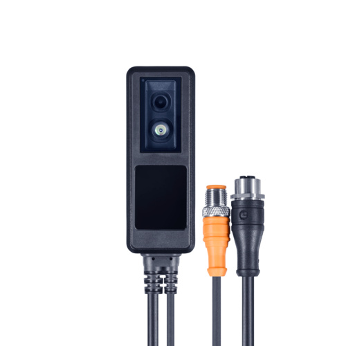

Getting started with the O3C
Unbox and Connect the O3C


The O3C is a standalone camera with integrated 3D, 2D, and IMU sensors; no separate processing unit or camera pairing is required.
Before You Start
Prepare the following:
Item |
Requirement |
|---|---|
Power supply |
24 V DC supply |
Power / I/O cable |
M12 A-coded, 5-pin female cable; for example, EVC070 |
Ethernet cable |
M12 X-coded, 8-pin male to RJ45, rated for 1 Gigabit/s; for example, E12631 |

| Pin | Function |
|---|---|
| 1 | U+ |
| 2 | Trigger In |
| 3 | 0V |
| 4 | Out 1 |
| 5 | Out 2 |

Connect the Camera
Place the camera on a stable surface with the front unobstructed. Do not bend or strain the 0.2 m pigtail cables.
Connect the M12 A-coded power / I/O pigtail to the 24 V DC supply.
Connect the M12 X-coded Ethernet pigtail to the host computer or a 1 Gigabit Ethernet switch.
Apply power and wait for the camera to finish booting. When startup is complete, the PWR LED should be on. Refer to the LED schema.
Confirm that the Ethernet connection is established, then continue with the software stack setup.
Before Permanent Installation
For a bench setup, the steps above are sufficient. Before installing the camera on a vehicle or machine, use the following guides:
Mechanical Integration Guide: mounting position, clearance area, bracket design, and strain relief
Electrical Integration Guide: connector pinout, cable routing, bend radius, grounding, and LED behavior
Software & Controls Guide: network and software integration
Maintenance Guide: operation and service considerations